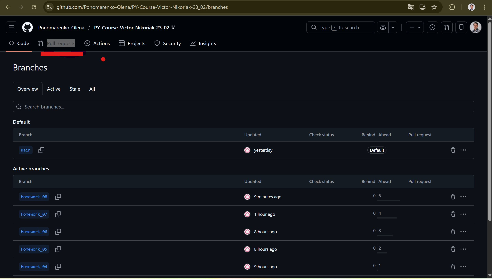
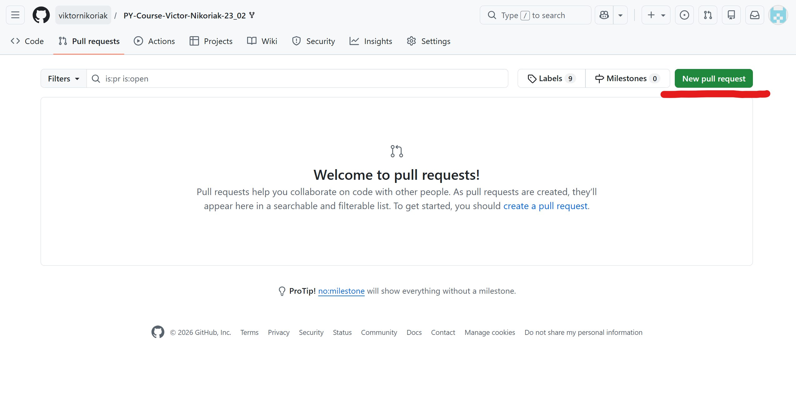
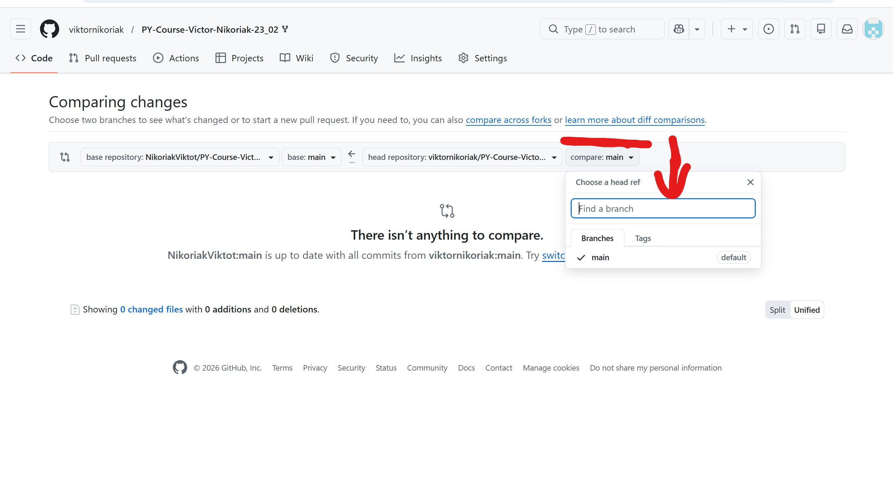
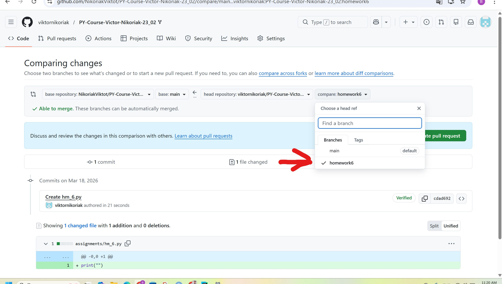
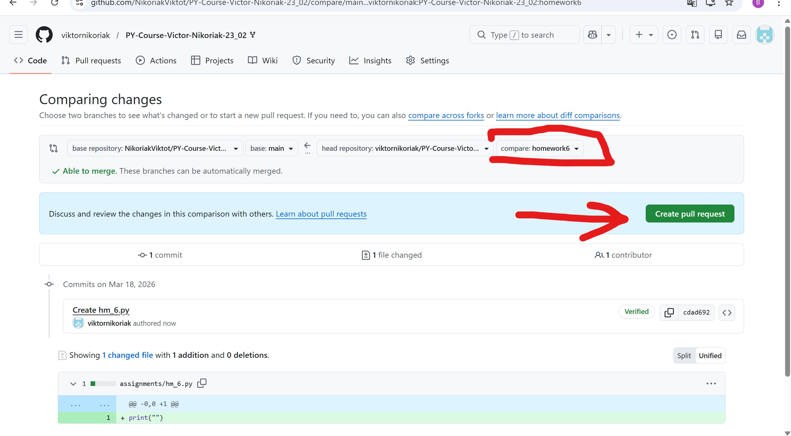
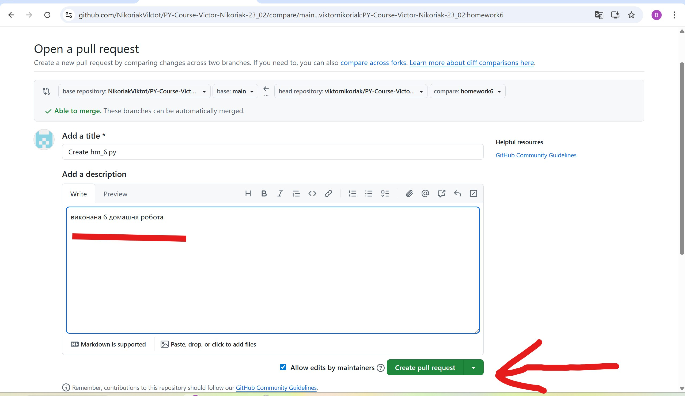
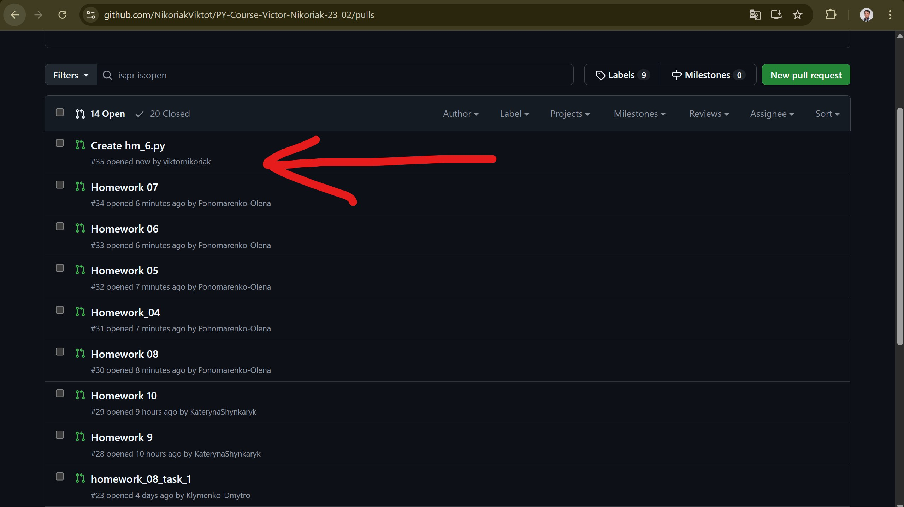

Як здати домашнє завдання через Pull Request¶
Що таке Pull Request¶
Pull Request (PR) — запит на перегляд змін, які ви зробили у своїй окремій Git-гілці (branch). У цьому курсі Pull Request — це спосіб здачі домашнього завдання.
Загальна схема:
Ви не надсилаєте файли викладачу вручну. Ви публікуєте свою гілку на GitHub і створюєте Pull Request. Після цього викладач бачить ваш код, усі зміни (diff) та історію commit-ів прямо на GitHub і може залишити коментар — до всього PR або до конкретного рядка коду.
Це не просто кнопка «здати ДЗ» — це стандартний механізм командної роботи, яким користуються в реальних software-проєктах. Уміння працювати з гілками, commit-ами та Pull Request — окрема практична навичка, яку курс відпрацьовує паралельно з Python (детальніше — GitHub → Огляд).
Перед створенням Pull Request¶
Переконайтеся, що робота знаходиться саме у вашій гілці — і що ця гілка вже опублікована на GitHub.
Гілка з домашнім завданням зазвичай називається на кшталт:
Перевірте, у якій гілці ви зараз перебуваєте:
Якщо ще не зробили commit:
Відправте гілку на GitHub. Якщо це перший push для цієї гілки:
При наступних push у ту саму гілку досить:
Гілка має існувати на GitHub
Pull Request створюється між гілками, які GitHub уже бачить. Якщо гілка існує лише на вашому комп'ютері й ви не зробили push — вибрати її на GitHub буде неможливо.
Створення Pull Request крок за кроком¶
1. Відкрийте вкладку Pull requests¶
На головній сторінці репозиторію, у якому ви виконували домашнє завдання, натисніть вкладку Pull requests у верхньому меню.

2. Натисніть New pull request¶
Якщо відкритих PR ще немає, GitHub покаже порожній список і зелену кнопку New pull request у правому верхньому куті. Натисніть її.

3. Розберіться з полями base / compare (і, якщо працюєте через fork, base repository / head repository)¶
Це найважливіша частина створення Pull Request. GitHub відкриває сторінку Comparing changes із чотирма полями (два репозиторії × дві гілки), якщо ви працюєте через fork — власну копію репозиторію курсу, як описано в Fork і Clone:
base repository: репозиторій викладача ← head repository: ваш fork
base: main ← compare: ВАША_ГІЛКА_З_ДЗ
- base repository / base — репозиторій і гілка, куди пропонуються зміни. У курсі це завжди репозиторій викладача, гілка
main. - head repository / compare — репозиторій і гілка, звідки беруться зміни. Це ваш fork і ваша гілка з домашнім завданням, наприклад
homework-01.
Якщо ви клонували репозиторій напряму (без fork) — полів base repository/head repository не буде, залишаться тільки base і compare; логіка та сама.
Натисніть на поле compare і в полі пошуку Find a branch знайдіть свою гілку.

4. Виберіть саме ту гілку, де виконано це домашнє завдання¶
Після вибору GitHub одразу покаже Able to merge (гілки сумісні, конфліктів немає), кількість commit-ів і changed files — файлів, які реально потраплять у Pull Request.

Найпоширеніша помилка
Уважно перевірте, щоб випадково не вийшло base: main і compare: main одночасно — тоді GitHub порівнює main сам із собою і не побачить жодної різниці. Правильно: base: main, compare: ВАША_ГІЛКА_З_ДЗ.
5. Перегляньте зміни та натисніть Create pull request¶
Перш ніж натискати кнопку — подивіться на Files changed: чи справді там ті файли, які ви редагували для цього домашнього завдання. Якщо файлів забагато або серед них є чужі — найімовірніше, обрано не ту гілку.
Коли переконались, що все правильно, натисніть зелену кнопку Create pull request.

6. Напишіть назву та опис, підтвердіть створення¶
GitHub відкриє форму Open a pull request із двома полями:
- Add a title — назва, за якою відразу зрозуміло, яке завдання здається. Хороший приклад:
Homework 01 — Python basicsабоHW 03 — Functions. Погані приклади:homework,done,test. - Add a description — короткий опис виконаного. Якщо якусь частину завдання не вдалося завершити — напишіть тут чесно, це допомагає перевірці більше, ніж порожнє поле.
Приклад хорошого опису:
Виконано Homework 03.
Реалізовано:
- роботу з функціями;
- передачу аргументів;
- return;
- декілька додаткових завдань.
Не до кінця зрозумів останнє завдання з *args.
Заповнивши поля, натисніть Create pull request ще раз — тепер уже остаточно.

7. Готово — Pull Request з'явився у списку¶
Pull Request створено і отримав номер у репозиторії (наприклад, #35). Він тепер видно у списку Pull requests — саме звідси викладач бачить, що домашнє завдання здано, і може відкрити його на перевірку.

Що відбувається після створення Pull Request¶
Створення Pull Request не копіює ваш код у main автоматично — це лише пропозиція моя-гілка → main. Викладач переглядає зміни і або приймає роботу, або залишає коментар із проханням щось виправити.
Якщо потрібні виправлення — новий Pull Request створювати не потрібно. Відкрийте ту саму локальну гілку, виправте код, зробіть новий commit і виконайте push:
GitHub автоматично додасть цей новий commit до вже відкритого Pull Request.
Головне правило¶
Перед кожним створенням Pull Request перевіряйте:
Якщо гілка не з'являється у списку compare¶
Найчастіша причина — гілку ще не відправлено на GitHub.
git branch --show-current # яка гілка активна зараз
git status # чи є незакомічені зміни
git push -u origin НАЗВА_ГІЛКИ
Після цього оновіть сторінку GitHub — гілка має з'явитися в полі compare.
Коротка схема здачі домашнього завдання¶
Виконав ДЗ
↓
git add . → git commit → git push
↓
GitHub → Pull requests → New pull request
↓
base: main compare: моя-гілка-з-дз
↓
Перевірив Files changed
↓
Title + Description → Create pull request
↓
ДЗ доступне викладачу для перевірки
👉 Короткий варіант цього ж процесу — у розділі Здача домашніх робіт. Якщо ще не робили fork і не знаєте, звідки візьметься ваша гілка, — почніть з Fork і Clone.